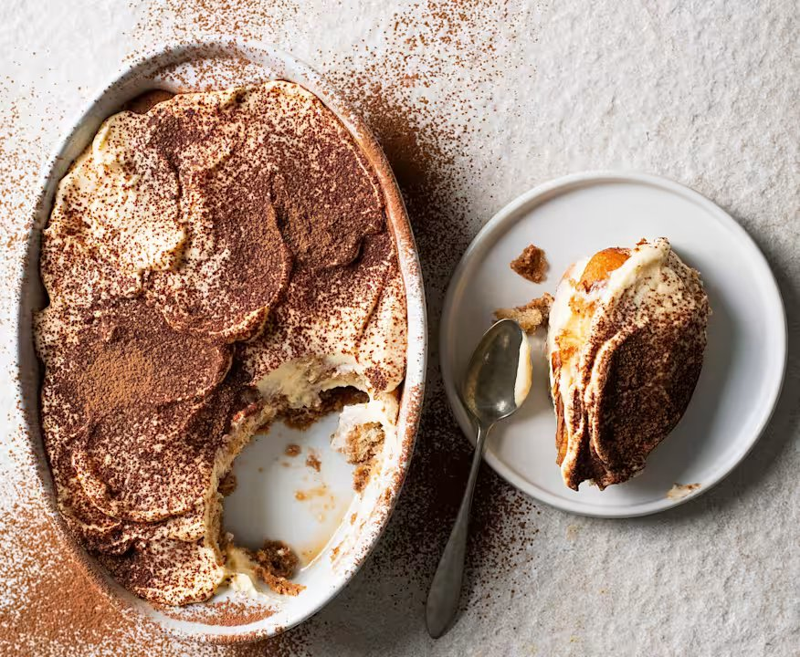

Tiramisu
Ingredients
8×
- 2 oeufs
- 1 jaune d'oeuf
- 130 g de sucre
- 500 g de mascarpone
- 300 g de biscuits à la cuillère
- 30 à 40cl de café très fort froid
- 20 g de cacao non sucré

Préparation
Étape 1
Insérer le fouet. Fouetter 2 oeufs, 1 jaune d'oeuf et 130 g de sucre 6 min/vitesse 4. Retirer le fouet, ajouter 500 g de mascarpone et mélanger 2 min/vitesse 3.
Étape 2
Tremper rapidement 300 g de biscuits à la cuillère dans 30 à 40cl de café très fort froid.
Étape 3
Dans un plat (30 x 20 cm), alterner deux couches de biscuits et de crème.
Étape 4
Filmer et laisser reposer 5h au réfrigérateur. Saupoudrer de 20 g de cacao non sucré juste avant de servir.
Conseils
- Remplacer 50g de café par de l’amaretto, du cognac ou du rhum.